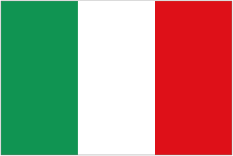

Rome: A Journey Through Time

Rome, the Eternal City, where history comes alive at every turn. From the mighty Colosseum to the ancient ruins of the Roman Forum, Rome is a city steeped in history and tradition.
Walking through the streets of Rome, I marveled at the grandeur of the Pantheon, stood in awe of the Vatican City, and threw a coin into the Trevi Fountain, ensuring my return to this magnificent city.
One of the highlights of my trip was visiting the Sistine Chapel, where Michelangelo's masterpiece ceiling took my breath away. The Vatican Museums offered a glimpse into the art and culture of a bygone era, while St. Peter's Basilica stood as a testament to the power and influence of the Catholic Church.
Exploring Rome's culinary scene was a delight, with mouthwatering pasta dishes, creamy gelato, and rich espresso to savor. The bustling markets and quaint trattorias offered a taste of authentic Roman cuisine, while the city's vibrant street food scene provided a quick and delicious bite on the go.
Rome is a city that captures the imagination and leaves a lasting impression on all who visit. As I bid farewell to this ancient city, I knew that Rome would always hold a special place in my heart.